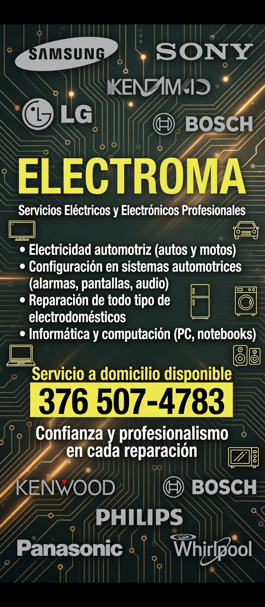

Servicio técnico local · Apóstoles
Reparación de TV, electrodomésticos, computadoras y equipos electrónicos.
Atención local con diagnóstico rápido y soluciones prácticas.
WhatsApp
Llamar
Ubicación

Sitio rápido y liviano optimizado para cualquier conexión.